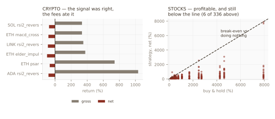
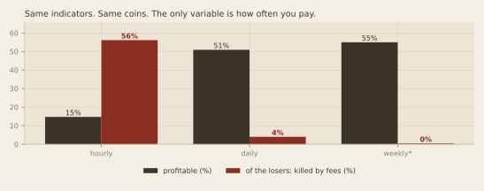
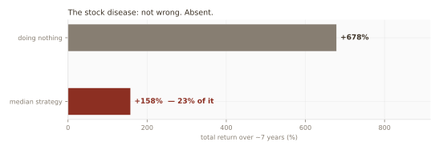

Two asset classes at opposite ends of the cost spectrum. Two failure modes with nothing in common. One conclusion, arrived at by two entirely different roads — which is what makes it hard to argue with.
By a process engineer (SPC) in semiconductor assembly & test. Paper trading throughout; no real money.
Every strategy in my lab reported a single number: net return. When almost all of them lost, that number told me that they lost and nothing about why — and the causes turn out to need opposite fixes.
So I scored every backtest twice: once with costs, and once with the tolls switched off. One extra column, and the whole picture reorganises itself.
| Verdict | Test | What it means | The fix |
|---|---|---|---|
| signal_wrong | gross < 0 | Loses before any cost. | Delete it. Cheaper trading will not save it. |
| cost_killed | gross > 0, net < 0 | The signal worked. The fees ate it. | Trade it less often. |
| lags_hold | net > 0, net < buy&hold | Profitable — and worse than doing nothing. | Stop. You are subtracting value. |
That third verdict is one I had to add against my own vanity. My first pass called anything profitable “ok”. It labelled 309 stock strategies “ok” while they underperformed doing nothing by a median of 520 percentage points. Making money is not the bar. Beating the null is the bar.
The indicator was correct. The trader went broke paying to act on it.
ADA on an RSI-2 rule, hourly: gross +1,034%. Net −81%. Across 1,358 trades. The rule was not wrong — it was expensive. It is one of 1,800 hourly strategies that made money before costs and finished underwater after them.

Same indicators. Same coins. The only thing changed is the bar interval.

An indicator only makes money if its edge per trade exceeds its cost per trade × how often it trades. Most indicators have a tiny real edge. A fast one multiplies a tiny edge by a large number of expensive trades, and the tolls win.
I started with the obvious explanation: indicators are lagging. Price moves first, the indicator confirms afterwards, and by the time you act the move is gone.
Every price indicator is lagging. RSI, MACD, Stochastic, CCI — all of them are functions of past prices. There is no leading indicator on a chart, because there is no information in a chart that is not already history. What people call “leading” oscillators are simply faster. Speed is not foresight.
And the data says lag is not the problem — it is the cure. On BTC daily, the biggest winners are the slowest rules in the lab: price-above-SMA200 (+188%, 32 trades), the golden cross (+85%, 8 trades in four years). The losers are the fast, reactive ones. A slow indicator trades rarely, and trading rarely is how you stop paying tolls.
Stocks cost about a fifth of what crypto costs to trade, so the toll booth should mostly vanish. It does — median cost drag falls to 7%, and charging full crypto fees would kill only 4% of the money-makers. Costs are simply not the problem in equities.
And it does not help at all.

Stocks drift upward. Any rule that takes you to cash has to earn its absence — and almost none do. You are not being punished for being wrong about direction. You are being punished for not being there.
In crypto you are punished for being wrong.
In stocks you are punished for being absent.
Two asset classes, at opposite ends of the cost spectrum, failing for causes that share nothing. That is a far stronger result than one market refusing me twice. It is not a fee problem, a coin problem, or a lag problem.
This is the part worth publishing, because it is the part nobody publishes.
A lookahead bug. A cross-sectional momentum test ranked assets on the close of bar
i and then immediately booked the return of bar i — earning the move it
had used to predict itself. It printed +368,081%. The absurd number
was the error message. A backtest result that looks too good is not a discovery. It is
a bug announcing itself.
An inverted objective. I ranked exit rules by per-trade Sharpe and it chose a trailing stop — which then destroyed the returns, because a trailing stop produces many small consistent wins and a fat right tail reads as variance to a Sharpe ratio. I had optimised a metric that actively penalised the source of the profit. Choosing the objective is a modelling decision, and the wrong one does not fail loudly. It quietly inverts your conclusion.
Survivorship. The one strategy that survived a holdout was ranked across coins that are liquid today. But a dying coin ranks highest right before it dies. Putting the corpses back into the universe — Terra at −94%, FTX’s token at −99.7% — cost the strategy 13,407 percentage points of in-sample excess return. It had been measuring a graveyard it could not see.
A flattering label. The lags_hold verdict in section 01 exists because my
own code was calling 309 losing-to-the-null strategies “ok”.
Four errors. All four found by the apparatus rather than by the market — which is the entire point of building the apparatus.
The honest close: after 7,860 backtests, the best strategy I found was holding. That is not a satisfying answer, and it is not a marketable one. It is just the one the data gave.
python3 scripts/exhaustion.py # recomputes every figure and number
Runs on
data/exhaustion_crypto.csv (7,524 runs: 22 indicators × 11 coins × 3 combination
tiers, hourly and daily, 0.15%/side) and data/exhaustion_stocks.csv (336 runs: the
same indicators × 16 liquid US names, daily, 0.03%/side). Every row carries its gross return, net
return, cost drag and verdict, so the decomposition in section 01 is checkable line by line.